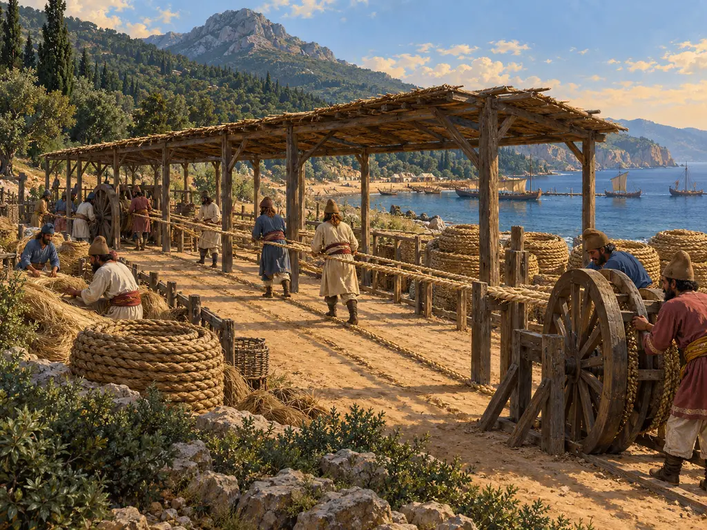
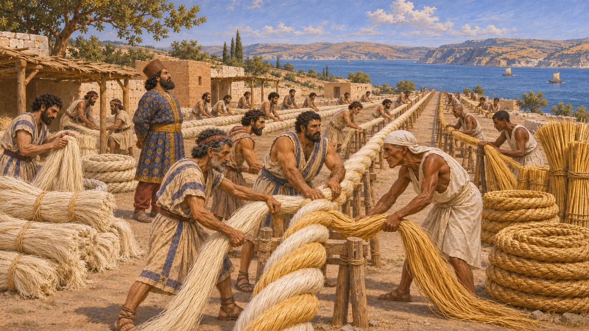
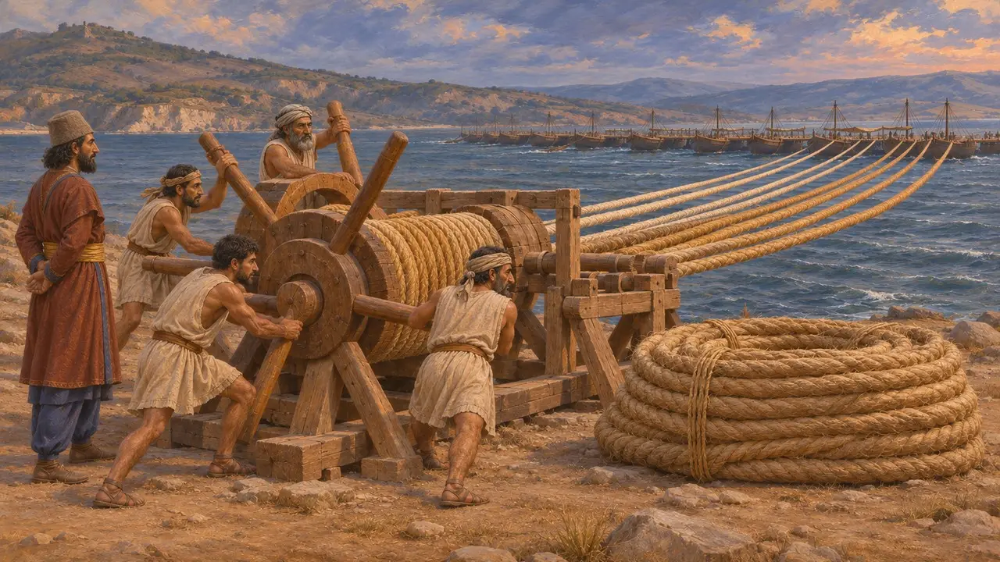
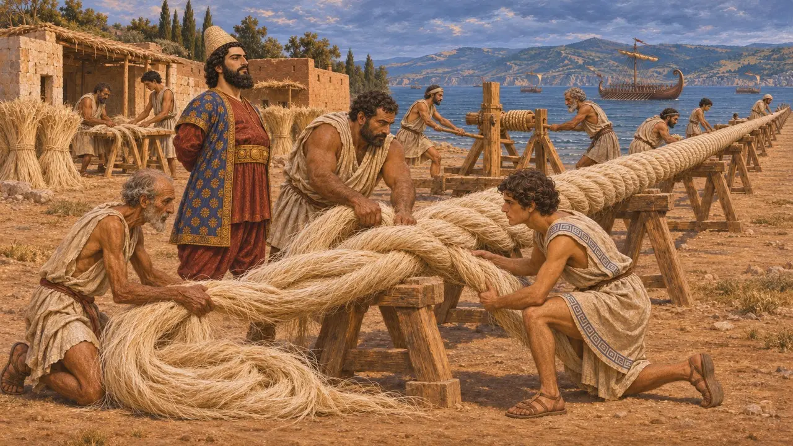
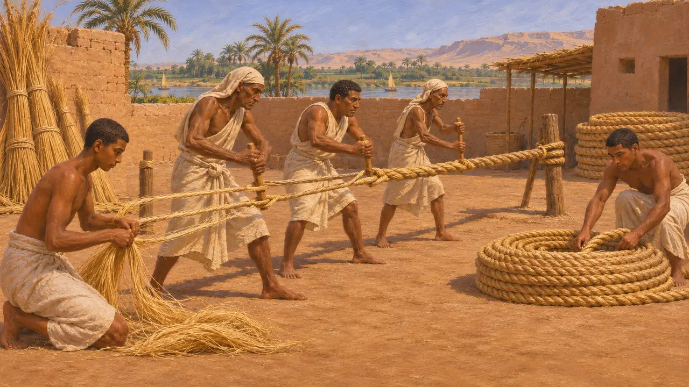
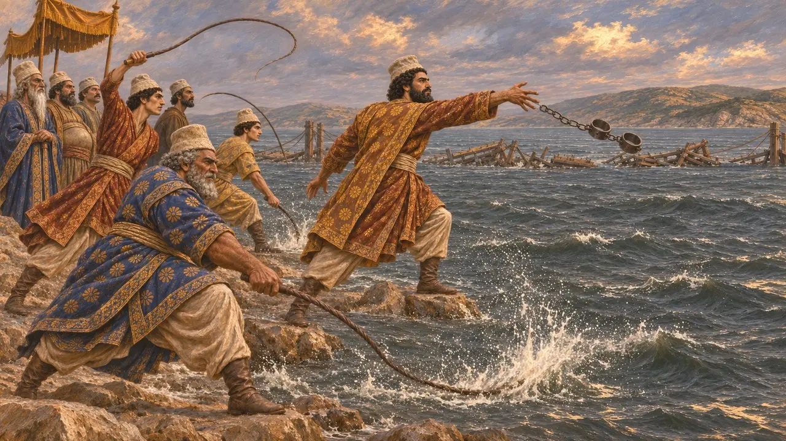

크세르크세스는 군대를 아시아에서 유럽으로 건너게 하려고 아비도스 근처 헬레스폰토스에 배를 이어 만든 다리 두 개를 놓게 하고, 거대한 밧줄로 고정했다. 헤로도토스에 따르면 이 밧줄은 흰 아마와 파피루스로 만들었으며, 페니키아와 이집트 선원들이 이를 만들고 설치했다. 이런 규모의 밧줄은 아토스를 가로지르는 운하를 판 일과 더불어 오랜 준비 작업의 일부였다.
게임에서: 게임에서는 아토스의 밧줄장이들이 저장 마당에서 가져온 아마를 꼬아 밧줄을 만듭니다. 게임은 아마만 사용합니다. 헤로도토스에 따르면 밧줄 대부분은 파피루스로 만들어졌으며, 그가 이름을 밝히지 않은 곳에서 페니키아인과 이집트인이 만들었습니다.

다리를 위해 주문된 밧줄
고대의 전승헤로도토스에 따르면 아토스 운하를 파는 동안 크세르크세스는 헬레스폰토스에 다리를 놓기 위해 파피루스와 흰 아마로 밧줄도 마련하게 했다. 그의 기록에 따르면 다리 하나는 페니키아인이 아마 밧줄로, 다른 하나는 이집트인이 파피루스로 놓았다. 첫 다리들은 완성되었으나 폭풍에 부서졌고, 헤로도토스는 크세르크세스가 공사 책임자들의 목을 베게 했다고 전한다.
Herodotus 7.25; 7.34-35

두 번째 다리와 그 운명
고대의 전승헤로도토스에 따르면 다시 놓은 다리에서는 늘어선 배의 각 줄을 밧줄 여섯 가닥이 붙잡았는데, 두 가닥은 아마, 네 가닥은 파피루스였고 기슭의 나무 권양기로 팽팽하게 당겼다. 그는 두 밧줄의 굵기는 같았지만 아마 쪽이 더 무거워 1큐빗에 1탈란트가 나갔다고 말한다. 미칼레 전투 이후 아테네인은 세스토스를 포위해 오랜 공방 끝에 함락시켰고, 그 밧줄을 고국으로 가져가 신전에 봉헌했다.
Herodotus 7.36; 9.114-121

밧줄의 굵기
분쟁 중헤로도토스는 아마 밧줄의 무게는 전하지만 굵기는 기록하지 않았으며, 역사가와 공학자들은 그의 수치가 무엇을 뜻하는지를 두고 논쟁해 왔다. 해먼드와 로즈먼의 연구 같은 현대의 복원 시도는 밧줄의 크기, 배의 수, 그리고 해협을 가로질러 장력을 어떻게 유지했는지를 밝혀내려 한다. 학자들은 헤로도토스가 말한 '흰 아마'가 어떤 섬유였는지도 논의한다.
N. G. L. Hammond and L. J. Roseman, The Construction of Xerxes' Bridge over the Hellespont, 1996

이집트의 밧줄 제조
당대 기록크세르크세스 시대에 이집트의 밧줄 제작은 이미 아주 오래된 기술이었다. 다만 남아 있는 증거는 그의 치세보다 훨씬 이르다. 약 천 년 전 테베에 조성된 재상 레크미레의 무덤 벽화에는 일꾼들이 섬유를 꼬아 밧줄을 만드는 모습이 그려져 있다. 홍해 연안 메르사 가와시스의 중왕국 시대 항구에서는 감아 둔 선박용 밧줄이 출토되었다. 헬레스폰토스 다리에 쓰인 밧줄 자체의 유물은 알려진 것이 없다.
N. de G. Davies, The Tomb of Rekh-mi-Re at Thebes, 1943; K. A. Bard and R. Fattovich, Harbor of the Pharaohs to the Land of Punt, 2007

헬레스폰토스에 내린 채찍질
후대의 전설헤로도토스에 따르면, 폭풍이 첫 다리들을 부수자 크세르크세스는 해협에 채찍질 300번을 가하고 족쇄 한 쌍을 던져 넣으라고 명했으며, 채찍질하는 자들은 물을 향해 모욕적인 말을 퍼부었다. 이 이야기는 오만 때문에 벌을 받는 왕이라는 그리스적 서사에 들어맞으며, 많은 역사가는 이를 있는 그대로의 보고가 아닌 교훈담으로 본다.
Herodotus 7.35
출처
- Herodotus, Histories 7.25, 7.33-36
- Herodotus, Histories 9.114-121
- N. G. L. Hammond and L. J. Roseman, The Construction of Xerxes' Bridge over the Hellespont, Journal of Hellenic Studies 116, 1996
- P. Briant, From Cyrus to Alexander, 2002
- N. de G. Davies, The Tomb of Rekh-mi-Re at Thebes, 1943
- K. A. Bard and R. Fattovich, Harbor of the Pharaohs to the Land of Punt, 2007